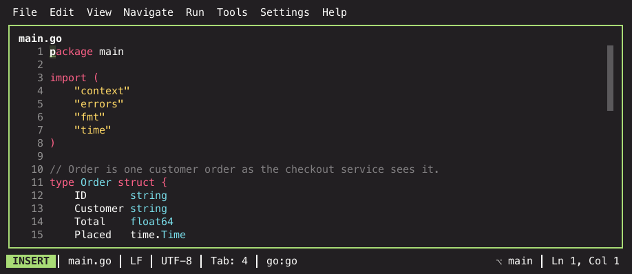
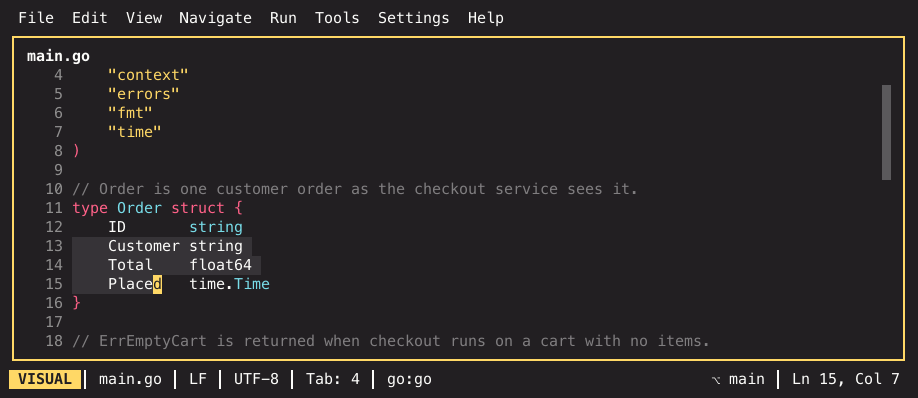

The modal editor¶
The editor is modal, like vim. If you have vim in your fingers, almost everything you expect works. If you do not, this page is the part of IKE worth reading before the rest.
Modes¶
Normal is where you start. Keys are commands, not text: j moves down,
dw deletes a word, u undoes. If you type a sentence in normal mode you will
trigger a dozen unrelated things.
Insert is where you type. I enters it (also a, o, O, I, A —
each at a different position), Esc leaves it.
Visual selects. v for characters, V for whole lines, Ctrl+V for a
column block. The block is a real rectangle for I and A, which put a caret
on every line it spans and let you type into all of them at once; the
operators (d, y, c) currently treat it as a plain character range from
where you started to where the cursor is, not column by column.
Replace overwrites. R enters it and everything you type replaces the
character it lands on instead of pushing it right; Esc leaves. For a single
character you do not need the mode at all — r in normal mode replaces the one
under the cursor and stays put (3rx overwrites three).
The active mode is always shown at the left of the status bar, as a coloured badge — and the cursor itself takes the same colour, so you can tell the mode without looking away from what you are typing:
| Mode | Badge | Enter it with | Leave it with |
|---|---|---|---|
| Normal | the theme's accent | Esc, from anywhere | — |
| Insert | green | I a o O I A |
Esc |
| Visual | yellow | v V Ctrl+V |
Esc |
| Replace | red | R |
Esc |
| Command line | blue | : / ? |
Esc or Enter |
The same window, two modes apart — the badge and the cursor colour are the
difference (monokai-pro theme, as on every screenshot in this documentation):


When in doubt, press Esc — from anywhere it lands you in normal mode.
The grammar¶
Normal mode composes rather than enumerates. A command is
["register] [count] operator [count] motion-or-text-object
so d2w deletes two words, "ayy yanks a line into register a, and c3j
changes three lines down. Learning the operators and the motions separately
gets you every combination of them.
Operators: d delete, c change, y yank, > / < indent, gu / gU
/ g~ lowercase / uppercase / toggle case, = reindent, gq reflow (hard-wrap
at editor.text_width). Doubling an operator makes it linewise (dd, guu,
gqq, ==). Commenting is a command (Cmd+7) rather than an operator, and
~ on its own toggles the case of the character under the cursor. Cmd+Shift+U
is the same case toggle for people who reach for JetBrains' chord — it takes
the selection, or the word under every caret — and Alt+Shift+U rotates the
identifier under each caret through camelCase → snake_case → kebab-case →
PascalCase → SCREAMING_SNAKE and back. Text that is not an identifier is
left alone.
Motions: h j k l, w b e by word and W B E by WORD (whitespace-
delimited, so foo.bar() is one), ge / gE back to the previous word's end,
0 ^ $ within the line, gg G for the file, { } by paragraph, f t F T to
a character with ; / , to repeat that jump forwards / backwards, % to the
matching bracket, H M L to the top/middle/bottom of the screen. g0 g$ gj gk
are the same as 0 $ j k until soft wrap is on, where they move by display
line instead of buffer line.
Text objects: iw / aw a word and iW / aW a WORD, ip / ap a
paragraph, is / as a sentence, i( / a( inside/around brackets (also
[, {, <, either bracket of the pair, and the aliases b for ( and B
for {), i" / a" a quoted string (also ' and `), and it / at
an XML/HTML tag.
Surround (vim-surround style): ys{motion}{pair} wraps a motion or text
object — ysiw) turns word into (word) — and yss wraps the whole line.
cs{old}{new} changes the nearest enclosing pair (cs"' turns "x" into
'x'), ds{old} deletes it. In visual mode S{pair} wraps the selection.
Pairs are the brackets, quotes and backtick; picking the opening bracket
pads with a space (( x )), the closing one doesn't ((x)) — and ds( /
cs( strip that padding again where ds) / cs) leave it. All of it
dot-repeats and applies at every caret.
Single-key edits skip the grammar for the things you do constantly: x
deletes the character under the cursor, D / C / Y act on the rest of the
line, s substitutes a character, J joins the next line onto this one, p /
P paste after / before, u undoes and Ctrl+R redoes.
Scrolling: Ctrl+F / Ctrl+B by page, Ctrl+D / Ctrl+U by half
a page; zz / zt / zb put the cursor line at the centre / top / bottom.
Counts work in visual mode too: V3j extends the selection three lines. A
selection also takes u / U / ~ (case), J (join the lines), r (replace
every character), =, and x / s as aliases of d / c. i and a grow
it to a text object (vi( selects inside the brackets), p replaces it with
what you last yanked, and o jumps to the selection's other end so you can
extend the side you started from.
Searching¶
/ searches forwards and ? backwards; n and N walk the matches, and
Esc clears the highlighting. * / # search for the word under the cursor
without typing it. Cmd+F opens the same search line for non-vim fingers.
The search guide covers case handling, regex, replacing
and project-wide search.
Registers, marks and repeat¶
Yanks and deletes land in registers — "a through "z, plus the unnamed one.
"ayy yanks into a, "ap pastes it back; an uppercase name ("Ayy) appends
instead of overwriting. Vim's automatic registers are there too: "0 holds the
last yank (so a delete in between cannot clobber it), "- the last small
delete, "1 through "9 a ring of the recent line-wise deletes, and "+ /
"* the system clipboard — "+p pastes what another application copied.
Plain yanks reach the system clipboard too: yy, y{motion} and visual y
mirror onto it, so what you yank in IKE pastes into any other application
without a "+ prefix. Only yanks sync — named registers ("ayy) and
deletes or changes (dw, cw) stay internal, so a stray delete never
clobbers your clipboard, and p keeps pasting the internal register. Turn it
off with editor.clipboard_sync = false (Settings → Editor → Yank to system
clipboard).
Macros use the same letters: q records, @ replays, @@ repeats the last
replay, and counts work (5@a).
Marks remember positions: ma sets mark a, `a jumps back to it, 'a
to its line. Uppercase marks (mA) are global — jumping to one opens its file
if you are somewhere else. Bookmarks are the same idea with a UI in front of
them: F11 flags the current line for the whole project, optionally with a
mnemonic digit and a note.
. repeats the last change. It is the highest-leverage key in the editor and
the reason the grammar is worth learning: make an edit once, move, press ..
g also prefixes a few navigation commands: gg to the top, gp paste, g-
/ g+ for chronological undo and redo, g; / g, to walk your recent edit
positions, gv to reselect the last visual selection, gi to resume inserting
where you last left insert mode, gJ to join lines without a space, and gf
to open the file whose name is under the cursor.
ZZ saves and closes the pane (like :x), ZQ closes it discarding changes
(like :q!).
Ex commands¶
: opens the command line. Recognised commands:
| Command | What it does |
|---|---|
:w :w path |
Save, optionally to a different path |
:q :q! |
Close (with !, discarding changes) |
:wq :x |
Save and close |
:e path |
Reload a file, or open a new unsaved buffer if it does not exist |
:s/pat/repl/g |
Substitute over a range |
:d :y |
Delete / yank the range's lines, optionally into a register (:d a) |
:sort :sort! |
Sort the range's lines (with !, in reverse) |
:> :< |
Indent / dedent the range — repeat the character for more levels (:>>) |
:42 :$ |
Jump to a line |
Every command also takes its long form (:write, :quit, :edit,
:substitute, :delete, :yank), and :xit is another spelling of :x.
:g and :v are recognised but report that they are not implemented yet.
Ranges work as in vim: % is the whole file, 1,5 a span, . the current
line, $ the last, '<,'> the last visual selection (pre-filled automatically
when you press : from visual mode), and /pat/ or ?pat? the next or
previous line matching a pattern. Addresses take offsets like .+2 or $-1.
:s takes the usual flags: g for every match on a line, i / I to force
case-insensitive or exact matching, n to only count matches, and c to
confirm each one interactively. A bare :s repeats the last substitution.
:sort is the one command whose default range is the whole file rather than
the current line — :'<,'>sort sorts a selection, :2,10sort a span. Its flags
combine freely: u drops duplicate lines, n sorts on the first number in each
line (a leading - counts, and lines without a number come first), and i
compares case-insensitively; :sort! reverses the order. The sort is stable, so
lines that compare equal keep their relative order, and the whole reordering is
a single undo step. :sor is the short form.
Tab completes paths on any command that takes one — :e, :w, :wq,
:x and their long forms.
Where IKE is not vim¶
A handful of deliberate deviations, all of them to make the editor behave like a modern GUI where vim has no opinion:
- Shift+arrows select. In normal mode they enter visual mode and extend;
releasing shift and pressing a plain arrow drops the selection instead of
keeping it (
keymodel=stopselbehaviour). Selections you start withvorVkeep vim's semantics. - Word motions with modifiers stay on the line. Alt+Left /
Alt+Right (or Ctrl + arrows) move by word but stop at the line's
start and end rather than wrapping to the next line;
.inside identifiers counts as a stop, soconfig.editor.tabWidthhas sub-word stops. Vim'sw/b/estill cross lines. - An insert is one undo unit. Everything typed between I and Esc undoes as a single step, and asking for undo while inserting commits the session first, so it behaves the same from either mode.
- Terminal-style kills work mid-insert. Alt+Backspace or Ctrl+W delete the previous word, Ctrl+U deletes to the line start, and Cmd+Backspace deletes the whole line.
- JetBrains chords work everywhere. Cmd+S, Cmd+Z, Cmd+F, Cmd+7 and the rest are bound alongside the vim keys, not instead of them. Use whichever you reach for.
Beyond the basics¶
- Multi-caret — the first Ctrl+G locks onto the word under the cursor;
each press after that leaves a caret behind and jumps to the next
occurrence. Ctrl+Shift+G puts a caret on every occurrence at once. Then
type once and edit everywhere.
I/Aon a Ctrl+V block do the same for a column. - Folding —
zatoggles a fold,zc/zoclose and open one,zM/zRdo the whole file. - Changed hunks —
]c/[cjump to the next / previous block of uncommitted changes in the file, the same ones the gutter marks. - Undo tree — undo is a tree, not a line. Undo Tree from the palette
shows the branches;
g-andg+walk the history chronologically instead of by branch. - Smart indent — with
editor.auto_indenton, Enter andoderive the new line's indentation from the language's block openers rather than just copying the previous line. - Snippets — type a trigger word and press Tab to expand a live template; they also appear in the completion popup.
Configuration worth knowing¶
| Setting | Default | Why you might change it |
|---|---|---|
editor.relative_line_numbers |
false |
Makes counts (5j, d3k) readable at a glance |
editor.search_ignore_case |
false |
Off means smartcase: lowercase folds, any uppercase matches exactly |
editor.auto_save |
focus |
Saves when focus leaves a pane; idle adds a timer, off disables |
editor.tab_width / editor.use_spaces |
4 / true |
Indentation, unless .editorconfig overrides it |
editor.format_on_save |
false |
Runs the language server's formatter on manual saves |
editor.text_width |
80 |
The column gq reflows text to (0 falls back to 79) |
The settings reference has the full list, and How files are rendered covers the display layers on top of the buffer — highlighting, Markdown, CSV and log rendering. Conceal and decoded values covers what the editor draws instead of the raw bytes, and how the caret brings them back.